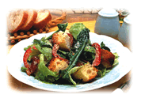

|  | ||
| 市販のフレンチドレッシングとマヨネーズを使用した簡単に作れるシーザーサラダです。 | ||
| 作り方 | ||
| �．戞璽灰鵑鷲�1cmに切り、弱火でじっくり炒めてカリカリベーコンを作ります。 �▲侫薀鵐好僖鵑�2cm位の角切りにし、オーブントースターで4〜5分、きつね色になるまで焼きます。 ��レタスは一口大にちぎり、ルッコラは半分に切ります。 赤ピーマンは細切りにします。 �ぅ疋譽奪轡鵐阿倭敢猯舛鮑�ぜ合わせておきます。 �ゥ棔璽襪豊 ↓◆↓�を入れ、ドレッシングを加えて混ぜ合わせます。皿に盛り付けて、パルメザンチーズ（分量外）とブラックペッパーをふりかけます。 |
||
| 材料 | ||
レタス 4枚 ルッコラ 50ｇ 赤ピーマン 1/3個 ベーコン 2枚 フランスパンの薄切り 3枚 ブラックペッパー 少々 ドレッシング マヨネーズ 小さじ2 クラフト100％パルメザンチーズ 大さじ2 市販のフレンチドレッシング 大さじ2 にんにくのすりおろし 少々 |
||
|